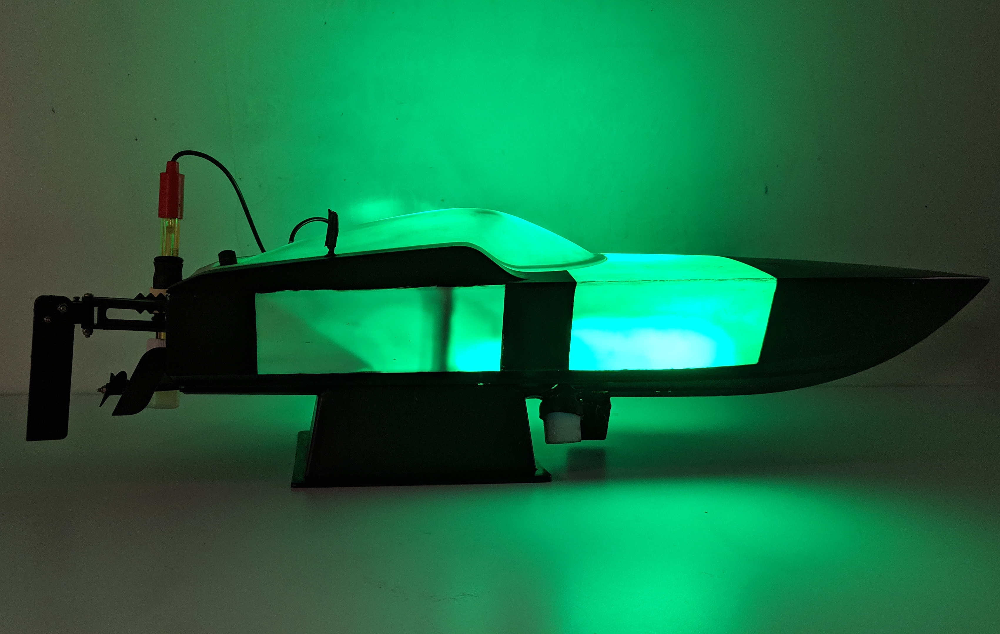
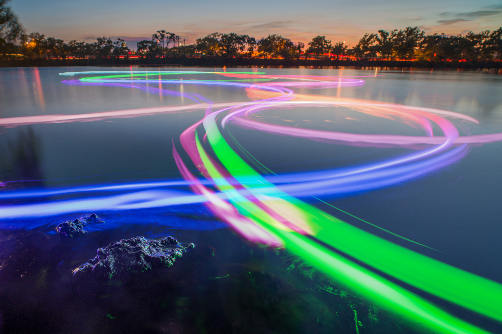
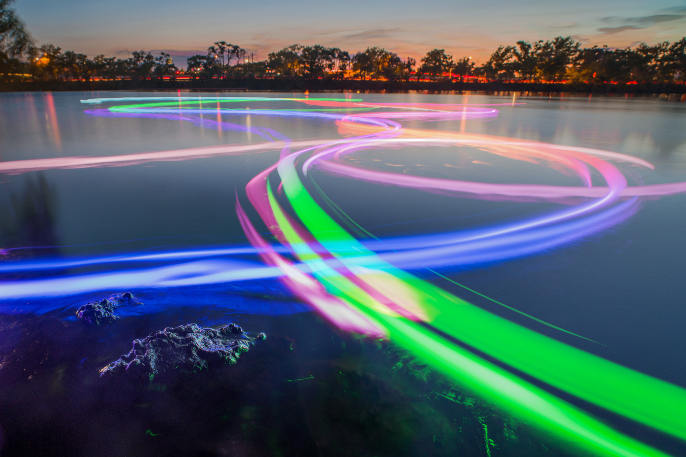
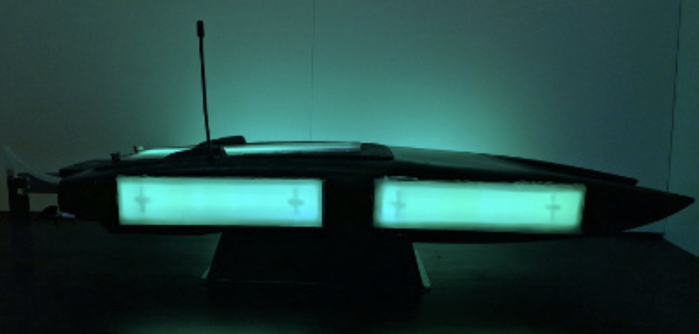
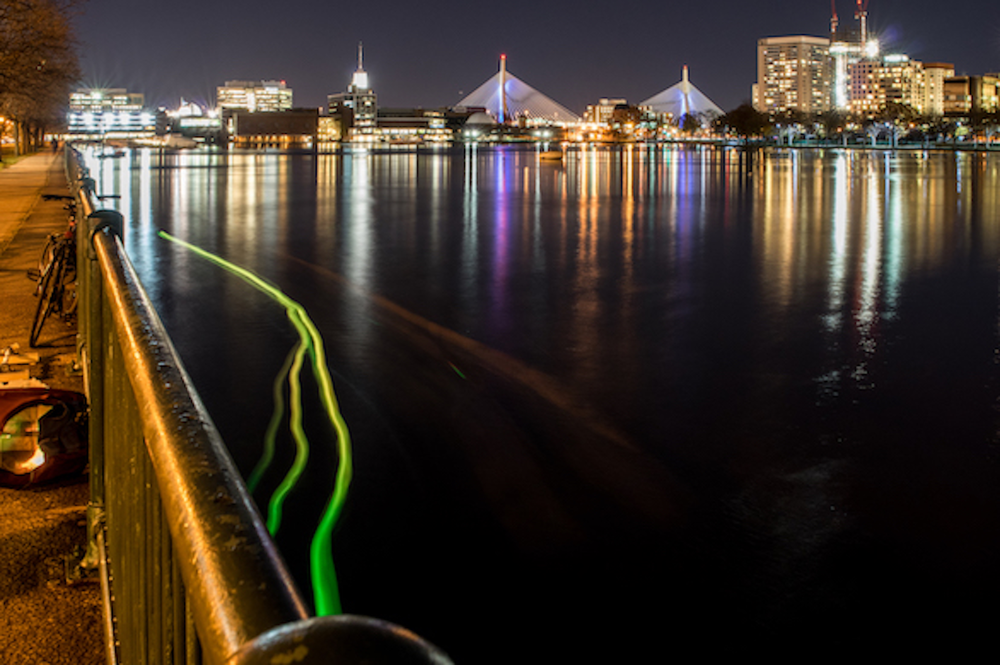
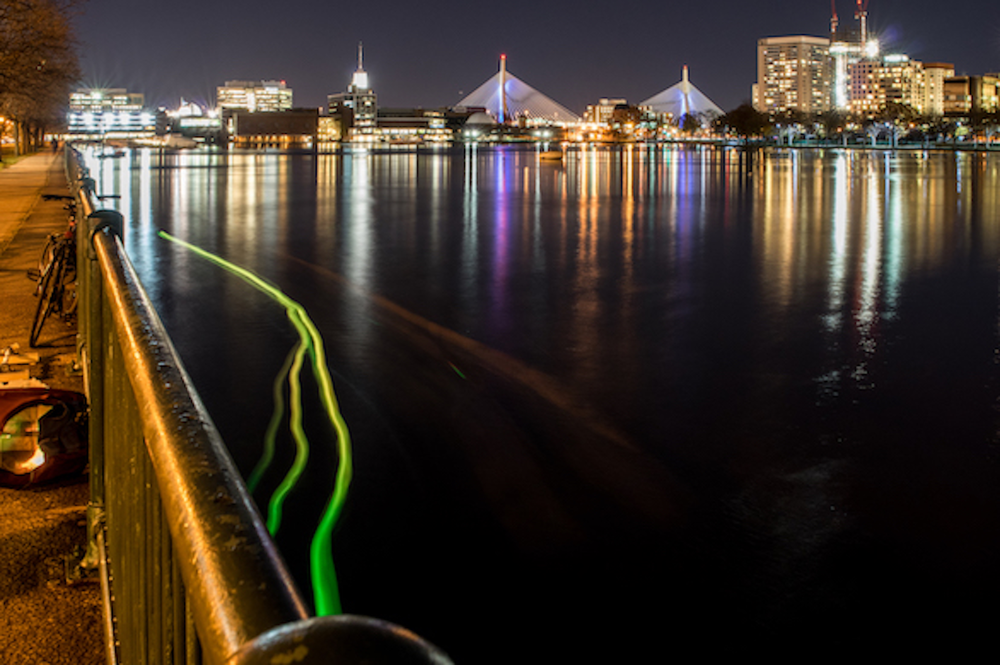
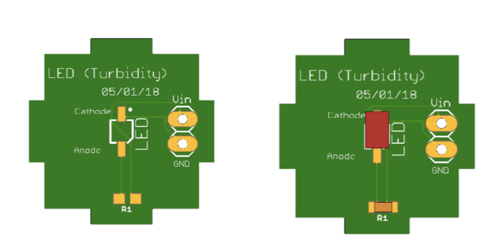
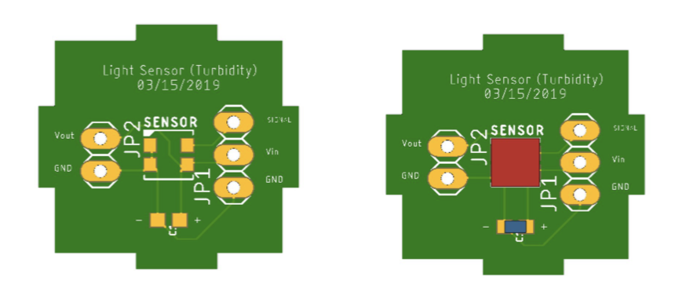
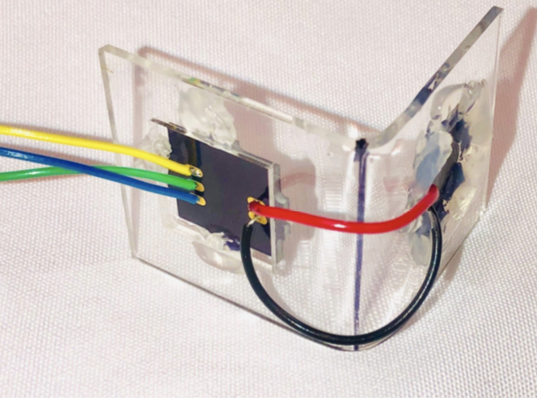

Phone
+1 857 209 6440
Email
rebei@mit.edu
Turbidity Sensor For Measuring Water Quality
MIT Media Media Laboratory Research Project Under Laura Perovich



Picture by Jorge Valdez
Seeboat
Overview
SeeBoat is a remote control boat with sensors (temperature, turbidity, conductivity, pH) that measure local water quality and LEDs that display the data on site by changing color in real time. Data is also logged to be physically displayed elsewhere and can be further recorded using long-exposure photos. Making environmental data experiential and interactive helps both communities and researchers better understand pollution and its implications. Seaboat has been tested in a number of bodies of water in the greater Boston area to understand local water quality and polution sources.
SeeBoat is a project from Laura Perovich at the MIT Media Lab with Sara Wylie, Talia Spitz, Don Blair, Robert Henning, Rod Bayliss, Claudia Chen, Sophia Struckman, Rima Rebei, and GreenRoots' ECO crew.
My Contribution
I worked on the turbidity sensor that was mounted on the Seeboat.
Community Impact
It is essential for the community to understand environmental contamination. There are over 50,000 facilities operating in the US with Clean Water Act (CWA) permits to emit wastes into public waterways.Close to a quarter of these facilities are in significant violation of their permits. In the Trump administration, enforcement action by the EPA has fallen to a 10 year low and many CWA protections are being weakened or eliminated. It is important communities together to revitalize the grassroots efforts that lead to regulations like the Clean Water Act, affirm the public's right to know about contaminants, and limit industrial health hazards. This project explores new ways to experience environmental data as a community to increase collective understanding and engagement in important civic conversations.
Measuring Water Quality
What is Turbidity?
Turbidity is a measure of the degree to which the water loses its transparency due to the presence of suspended particulates. The more total suspended solids in the water, the murkier it seems and the higher the turbidity. Turbidity is considered as a good measure of the quality of water. It is essential to eliminate the turbidity of water in order to effectively disinfect it for drinking purposes. This adds some extra cost to the treatment of surface water supplies.
There are various parameters influencing the cloudiness of the water. Some of these are:
- Phytoplankton
- Sediments from erosion
- Resuspended sediments from the bottom (frequently stir up by bottom feeders like carp)
- Waste discharge
- Algae growth
- Urban runoff



Seeboat Turbidity Sensor
Because of the importance of measuring turbidity in the context of water quality, it was essential for the Seeboat to have a turbidity sensor onboard. To find out more about how I created the turbidity sensor view the following tutorial below.
 
Turbidity Sensor before Covered in Epoxy
Turbidity Sensor Manufacturing Tutorial
Similar Projects
Click below to explore more of my projects!